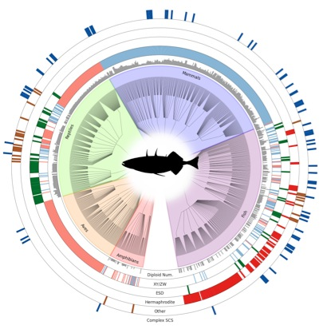
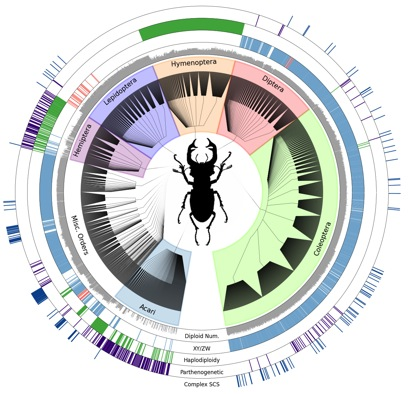
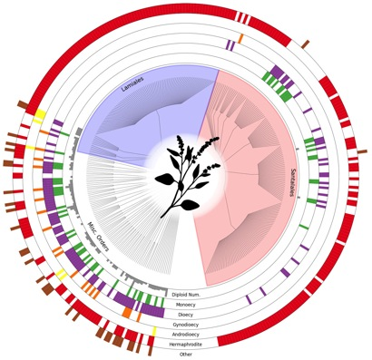

The Tree of Sex Database
The vast majority of eukaryotic organisms reproduce sexually, but the nature of the sexual system and the mechanism of sex determination vary remarkably, even among closely related species. Testing evolutionary hypotheses regarding the causes and consequences of this diversity requires interspecific data placed in a phylogenetic context. In The Tree of Sex Consortium (2014), we describe a database listing sexual systems and sex determination mechanisms across the eukaryotic tree of life, with data on sexual systems from 11,038 plant, 709 fish, 173 amphibian, 593 non-avian reptilian, 195 avian, 479 mammalian, and 9,108 invertebrate species.
TraitDB was a searchable MySQL-based database, custom built by NESCent. It has been transitioned to the current R based shiny server, which allows authorized administrators to upload additional data and delete incorrect records. To submit additional data, please fill in a sample data form (for
plants or
animals) and email to
treeofsex@gmail.com.
Contributors who wish to obtain administrator status to help curate or upload data over longer periods of time should email
treeofsex@gmail.com
with a CV and short description of their goals for the database.
Plant database
Vertebrate database
Invertebrate database
Expanded datasets focused on chromosome number and sex chromosome systems are available for amphibians and the insect groups polyneoptera and coleoptera at karyotype.org
Download the May 19, 2014 database reported in The Tree of Sex Consortium (2014):
* Vertebrates
* Invertebrates
* Plants-data
* Plants-refs


